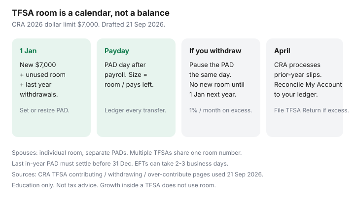

Personal Finance · Canada
How to Automate TFSA Contributions in Canada Without Over-Contributing
Automating TFSA contributions is how unused room dies quietly in a chequing account. Automating them wrong is how you pay 1% a month on excess. The Canada Revenue Agency is unambiguous in 2026: the dollar limit is $7,000, withdrawals do not create room until 1 January of the next year, and CRA My Account lags because issuers report by the end of February. Your own ledger plus My Account is the control system — not a bank’s “contribute” button.
This is contribution mechanics, not ETF advice. Date-stamped 21 Sep 2026.
Disclosure: Brokerage TFSA offers and HISA-inside-TFSA accounts are offer types. Saving Optimizer may later add partner links. We do not currently claim issuer partnerships. This is education, not tax or investment advice. Confirm room in CRA My Account and with your issuer before you set a recurring transfer.
Key takeaways
- 2026 TFSA dollar limit is $7,000 (same as 2024–2025). Add unused room from prior years. Limits since 2009 are on CRA’s table ($5,000 up to $10,000 in 2015, then back down, $7,000 from 2024).
- Check CRA My Account, then do your own calculation — CRA flags that 2025 records process around April 2026 and that issuer/CRA records can differ.
- A withdrawal in 2026 comes back as room on 1 January 2027, plus the 2027 dollar limit. Recontributing the same year without leftover unused room creates excess taxed at 1% per month.
- Room is per person, not per household. Spouses cannot share room. You can have more than one TFSA; room is global across them.
- Size the payday PAD so 26 (or 24) transfers cannot exceed remaining room. Pause after an emergency withdrawal.
Check CRA My Account room before setting any recurring transfer
CRA path (from the contribution-room page): sign in → Individual → Savings and pension plans → View TFSA details → Contribution room. Use the “calculation using your own records” tool when the banner warns that slips are still arriving. CRA’s own examples for 2026 add the $7,000 dollar limit on 1 January to unused room. If you have been 18+ and resident since 2009 with no contributions, cumulative room is large — still verify; non-residency years and over-contributions change the math.
Keep a two-column sheet: contributions and withdrawals by date and issuer. Multiple TFSAs (bank HISA TFSA + brokerage TFSA) share one room number. The bank cannot see the brokerage.
Payday auto-transfer into TFSA cash or brokerage settlement
Two clean patterns:
- TFSA HISA at a CDIC member (EQ TFSA cash savings posted 1.50% on 16 Sep 2026 — lower than EQ’s unregistered 2.75%, which is a reason some people keep emergency cash unregistered). Automation: PAD from chequing the day after payday.
- Brokerage TFSA settlement, then you buy whatever is in your plan. Automation still hits cash first. Do not set a PAD larger than settlement can absorb if a purchase is pending.
Size: remaining room ÷ pays left in the year. Example: $7,000 unused on 1 Jan, 26 bi-weekly pays → $269. If you start in September with $7,000 unused, do not divide by 26; divide by pays left or you will still be fine — the risk is starting in September with a $269 PAD that was designed in January and a $4,000 lump sum you forgot. Recalculate whenever you contribute extra (bonus, tax refund).

Track withdrawals: room returns only on January 1 next year
CRA withdrawing page (used 21 Sep 2026): taking money out does not immediately create new room. The amount is added the next calendar year. Issuers report withdrawals by the end of February following the year. If you pull $4,000 in June 2026 for a car repair, you cannot put $4,000 back in July unless you still had unused room besides that $4,000.
CRA’s Taylor example: $7,000 room on 1 Jan 2026, $4,000 contribution 10 Jan, room $3,000. A later same-year replacement of a withdrawal needs leftover unused room. To replace the full withdrawal you wait until 1 January 2027, when withdrawal room and the new year’s dollar limit both appear.
Avoid same-year recontribution traps after an emergency withdrawal
This is the automation bug. A recurring $269 PAD keeps running after you withdrew $5,000. If you were fully funded, the PAD is now excess. Actions the day you withdraw:
- Pause the recurring TFSA transfer the same hour.
- Log the withdrawal on your sheet.
- If the money was true emergency, prefer an unregistered HISA next time so TFSA room stays intact.
- If you already over-contributed, CRA: withdraw the excess as soon as possible; 1% per month on the highest excess in the month; file a TFSA Return. Do not wait for a spring letter.
Split automation across spouses with individual room
There is no joint TFSA. Higher-income spouses can gift cash (generally tax-free between spouses in this context — attribution is a bigger issue on non-registered investing) so each adult fills their own room. Two $7,000 automations are $14,000 of household room in 2026 if both have at least that unused. Do not contribute to a spouse’s TFSA from your account in a way the issuer records as your contribution — the holder of the TFSA is whose room is used. Each person sets their own PAD from their own chequing.
Year-end checklist: unused room and upcoming annual limit
- November: remaining room ÷ pays left. Either raise the PAD or plan a lump sum you can actually spare.
- 15 December: last PAD must settle in-year. EFTs can take 2–3 business days (EQ). Do not initiate on 31 December and assume it counts for 2026.
- 1 January: new dollar limit appears. Restart or resize PADs. Withdrawal room from last year should appear — if My Account still looks wrong, wait for the April refresh and keep using your sheet.
- April: CRA processes prior-year issuer slips. Reconcile. This is when phantom excess letters show up if you ignored a same-year recontribution.
Sources & date stamps
- CRA, Calculate your TFSA contribution room — 2026 dollar limit $7,000; April 2026 processing note for 2025 records; own-records calculator (used 21 Sep 2026).
- CRA, Before you contribute — historical dollar-limit table 2009–2026; $7,000 for 2024–2026.
- CRA, Withdrawing from a TFSA — room on 1 January following year; do not recontribute same year without unused room.
- CRA, If you over-contribute — 1% per month; TFSA Return; issuer reporting by end of February.
- EQ Bank rates 16 Sep 2026 — TFSA cash savings 1.50% (compare to unregistered 2.75% with DD).
Frequently asked questions
What is the TFSA limit for 2026?
The CRA dollar limit is $7,000 for 2026 (and was $7,000 for 2024 and 2025). Your personal room is that amount plus unused room from prior years plus withdrawals made in 2025 (those came back 1 January 2026), minus 2026 contributions. Check My Account and your own records.
I withdrew in March. Can my payday PAD keep running?
Only if you still have unused room after counting the contributions you already made this year. The withdrawal itself does not free room until 1 January next year. Pause the PAD until you have recalculated.
Does interest inside a TFSA use room?
No. CRA is explicit that growth does not reduce next year’s room. Only contributions (and certain transfers treated as contributions) use room.
Can my spouse and I share one TFSA?
No. Room is individual. You can each automate into your own TFSA. Contributions to a TFSA count against the holder’s room.
CRA My Account looks wrong. Who wins?
Your transaction records. CRA tells you issuer slips arrive by the end of February and that the best time to rely on My Account is after the April processing of the prior year. Keep a ledger. If you are in excess, withdraw it and file the TFSA Return even if the portal still looks clean.